CS 180 · project 02
Filters & Frequencies
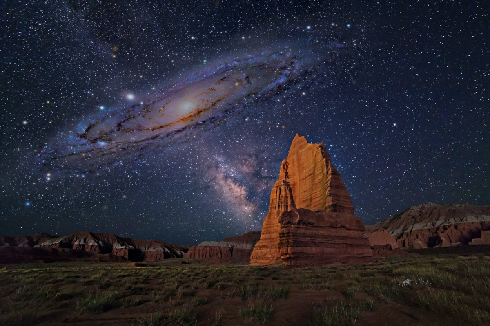
lucas zheng · github.com/3LucasZ/cs180-showcase
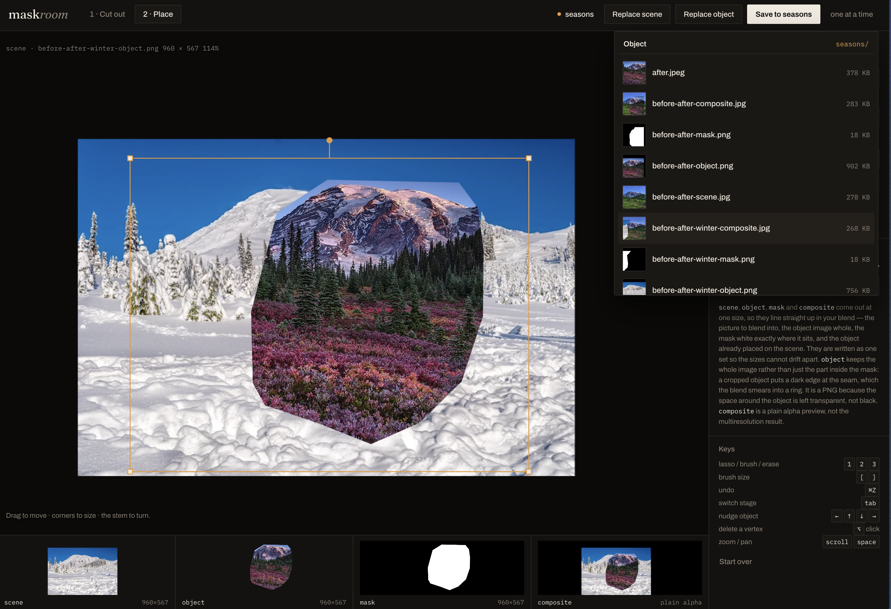
1.1: Convolutions from Scratch
A convolution is the resulting image of applying the same weights to every chunk in the image. Algorithmically, that looks like: for \((x, y)\) in image, apply filter on \((x, y)\) and surrounding pixels, use that output result for the \((x, y)\) in the new image.
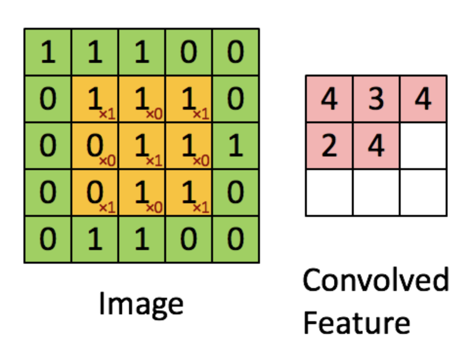
A nuance is that we have to flip the filter first before doing this operation to make it a convolution and not a cross-correlation.
A problem is, what to do when you apply the filter on the corners / edges of the image. There are no pixels neighboring in some direction. Thus, we have to pad the image with dumb values to make the convolution image have the same size as the input image (or a different dimension). For my demo, I will do same padding with zero fill values.
def conv4(im, kern):
# heights, widths
H, W = im.shape
KH, KW = kern.shape
# paddings; "same" pad
PT = (KH-1)//2
PB = KH-1-PT
PL = (KW-1)//2
PR = KW-1-PL
pim = np.pad(im, ((PT, PB), (PL, PR)), mode="constant", constant_values=0)
out = np.zeros_like(im, dtype=float)
# conv flips cross-correlation
kern = np.flip(np.flip(kern, axis=0), axis=1)
for y in range(H):
for x in range(W):
for ky in range(KH):
for kx in range(KW):
out[y, x] += pim[y+ky, x+kx] * kern[ky, kx]
return out
We can speed this up drastically from 4 nested for loops to 2. The trick is to use np.sum to sum over the entire 2d kernel in one operation instead of 2 for loops. I believe the numpy convolve operator is even more efficient than this!
def conv2(im, kern):
# heights, widths
H, W = im.shape
KH, KW = kern.shape
# paddings; "same" pad
PT = (KH-1)//2
PB = KH-1-PT
PL = (KW-1)//2
PR = KW-1-PL
pim = np.pad(im, ((PT, PB), (PL, PR)), mode="constant", constant_values=0)
out = np.zeros_like(im, dtype=float)
# conv flips cross-correlation
kern = np.flip(np.flip(kern, axis=0), axis=1)
for y in range(H):
for x in range(W):
# parallelize dot product with 0 loops instead of 2
out[y, x] = np.sum(pim[y:y+KH, x:x+KW] * kern)
return out
Here's the results of applying our convolution code to an image and standard \(9 \times 9\) box filter. This is a low pass filter which blurs the image by making each pixel's new value the average of its \(9 \times 9\) chunk.
box_kern = np.ones((9, 9)) / 81 out_box = post(conv2(im, box_kern))
Next up, we use the finite difference filters (derivative of the image in \(x\) then \(y\) directions). These should highlight when there are sharp changes in brightness in the image, to highlight contrast and bring about edges.
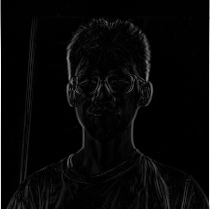
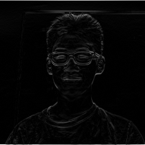
dx_kern = np.array([[1, 0, -1]]) dy_kern = np.array([[1], [0], [-1]]) out_dx = post(conv2(im, dx_kern)) out_dy = post(conv2(im, dy_kern))
1.2: Finite Difference Operator
We run the same \(D_x\), \(D_y\) finite difference operator kernel on the classic "cameraman" image.

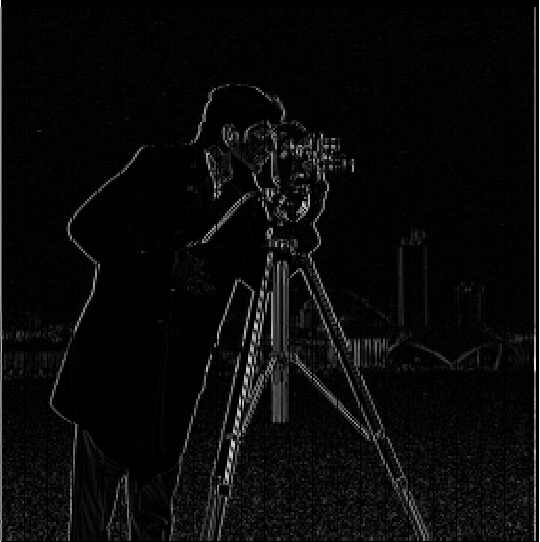
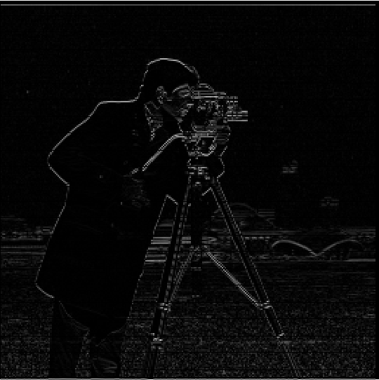
Those highlight the horizontal and vertical edges in the image. If for each pixel we show the magnitude of the edges: \(\text{new image} = \sqrt{x_{\text{image}}^2 + y_{\text{image}}^2}\) we get the gradient magnitude image:
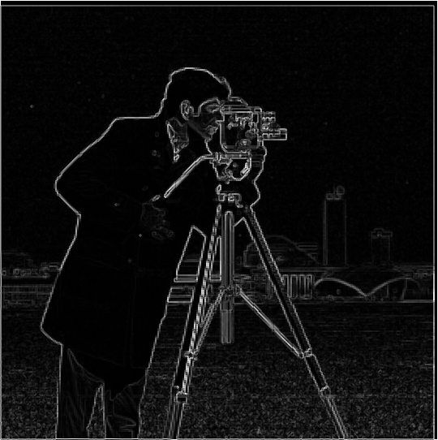
Some of the things in the image aren't really edges. What if we binarize the gradient magnitude image so that things that are edges are shown as a 1, everything else is a 0. We try to find the right threshold magnitude. Everything below that strength is 0, everything above is 1. To do this, we graph a histogram of frequencies of strengths. We try to find the "elbow" in the plot as a decent quantitative estimate. We pick \(t = 0.3\).
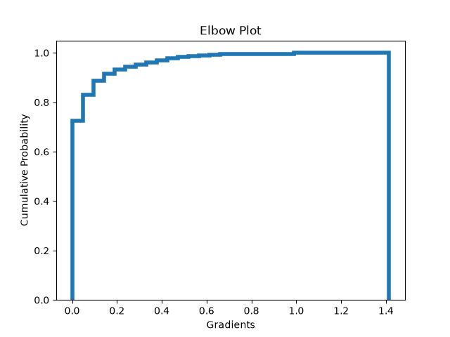
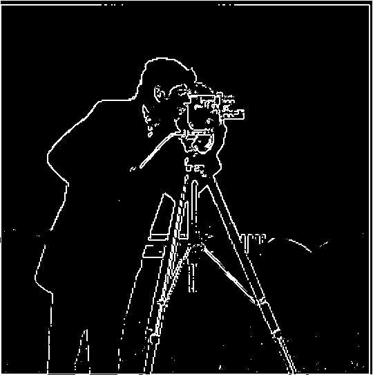
Not very good, there seems to be some noise no matter what threshold we pick and many of the real edges get cutoff too.
1.3: Derivative of Gaussian (DoG) filter
Since this was rather noisy, what if we applied a gaussian filter to smooth it first? We repeat the experiment above, except we apply a smoothing gaussian filter first. \(15 \times 15\) and \(\sigma = 2\). Note: we generate a 2D gaussian filter is to outer product a 1D gaussian filter with itself.
Gaussian kernel: \[G(x,y) = \exp\left(-\frac{x^2+y^2}{2\sigma^2}\right)\] separable \(G(x,y) = g(x)\,g(y)\) \[g(x) = \exp\left(-\frac{x^2}{2\sigma^2}\right)\]
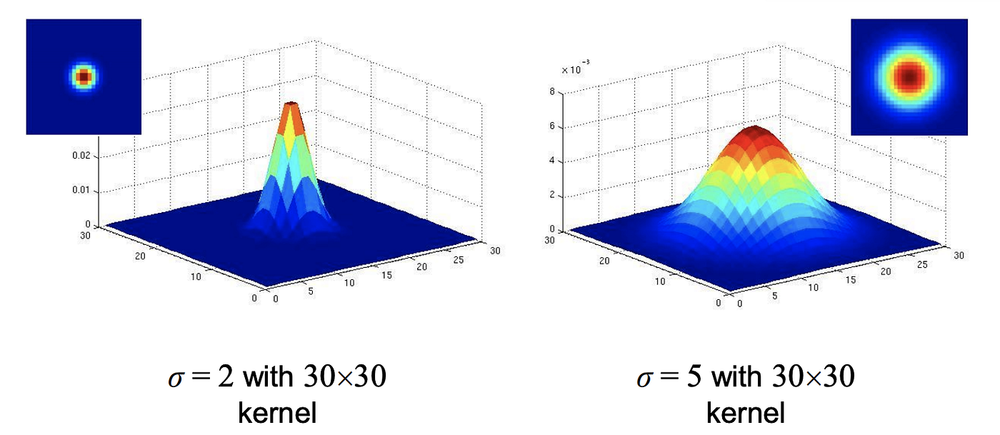
Notice that the Dx and Dy images are lighter now, but also significantly less noisy. We setup the elbow plot again. With t = 0.1:
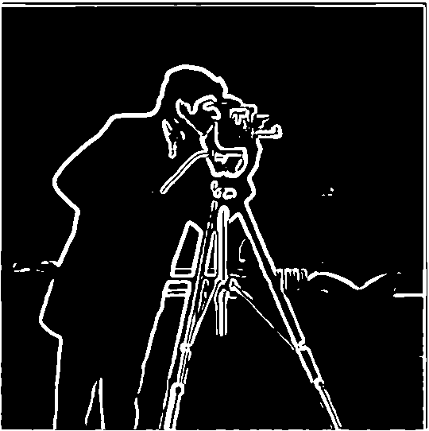
We observe that the outline around the cameraman is clearer and less noisy. However, the edges are more thick and prominent.
Right now, we are doing 2 convolutions for this experiment. For the first convolution, we blur the image. Second convolution, we apply the finite difference operator. A beautiful property of convolutions is that they are associative and commutative. We can convolve the gaussian filter with the finite difference operator. This new "Derivative of Gaussians" filter can then be applied as a single operation which gives us the result above. Let's test out this theory.
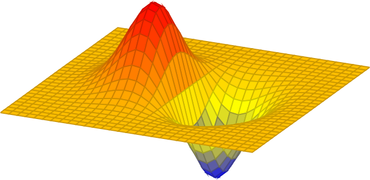
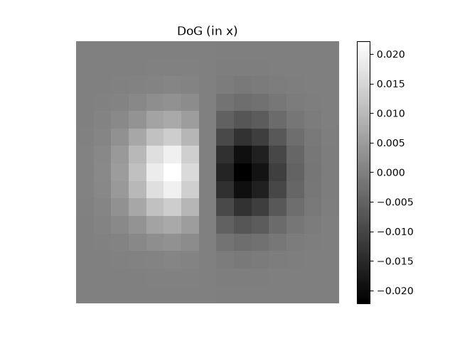
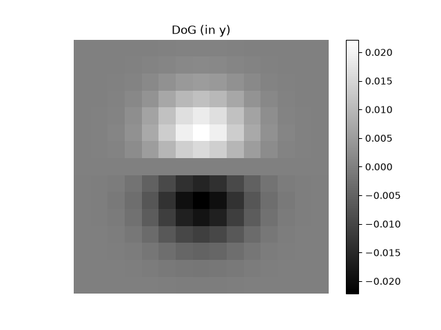
Exact same result as before. Proof that this trick works and saves computation.
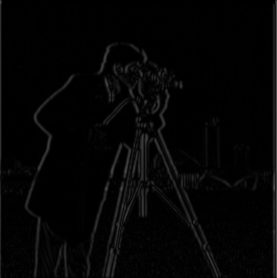
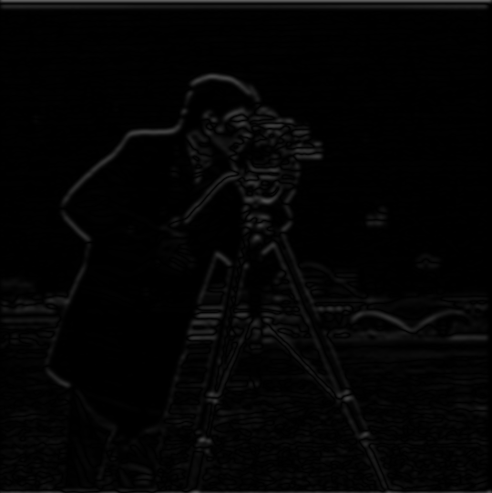
2.1: Image Sharpening
Suppose we want to sharpen our image. To sharpen an image, we can think of amplifying the existing high frequency signals within the image. We want image + \(\alpha \cdot\) (high frequency parts of the image). We can get the high frequency parts of the image by taking the original image and subtracting the low frequency parts of the image. We obtain the low frequency by applying the gaussian filter. The mathematical derivation for our final result is below:
\[f + \alpha (f-f \ast g)\] \[(1 + \alpha)f-\alpha f \ast g\] \[f \ast ((1+\alpha)e-\alpha g)\] Note: \(e\) is the identity kernel, not the constant. all zeros except a 1 at the center.
This result is the unsharp mask filter, which, ironically, should sharpen our image when convolved with the image.
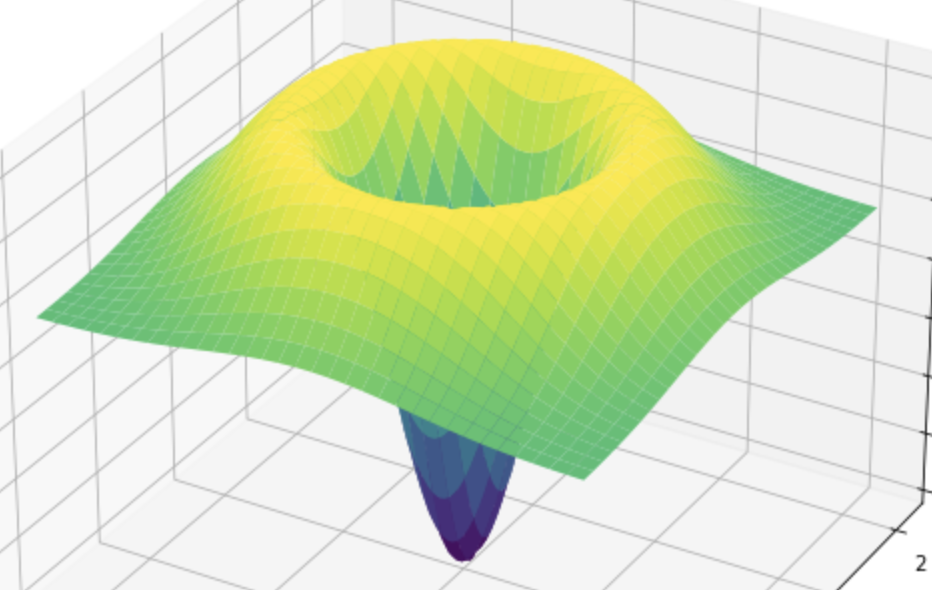
Taj Mahal sharpened with 3 differing alpha values, 3 differing sigma values. Quite distinct results. This helps understand the effects of changing each parameter by trying all combos in a grid.
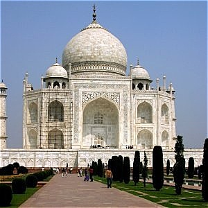
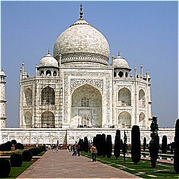
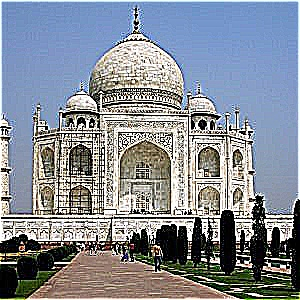
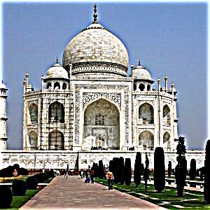
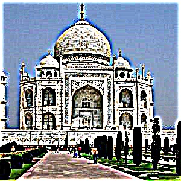
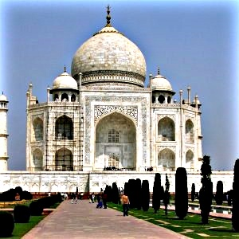
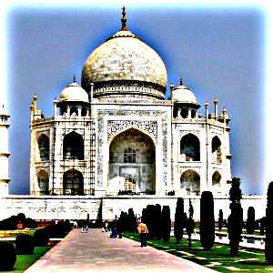
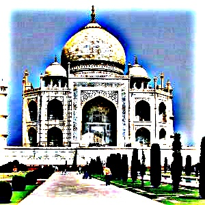
Beautiful waterfall
Beautiful fox
What if we blurred first, then sharpened? Could we obtain the original image? My hypothesis would be no. Blurring the image makes data get lost, fundamentally. Pixels get averaged / mixed around and it probably is irreversible. There is not much we can do to regain all the lost data. With a blur of sigma=5, and a sharpen of alpha=3, we can see the image still looks blurry. A sharpened blurry image is blurry with thicker blurrier edges.
Note: we start using the cv2.GaussianBlur function from the cv2 library instead of our custom gaussian + convolution. This is because their library is much faster, making the experiments run quicker.
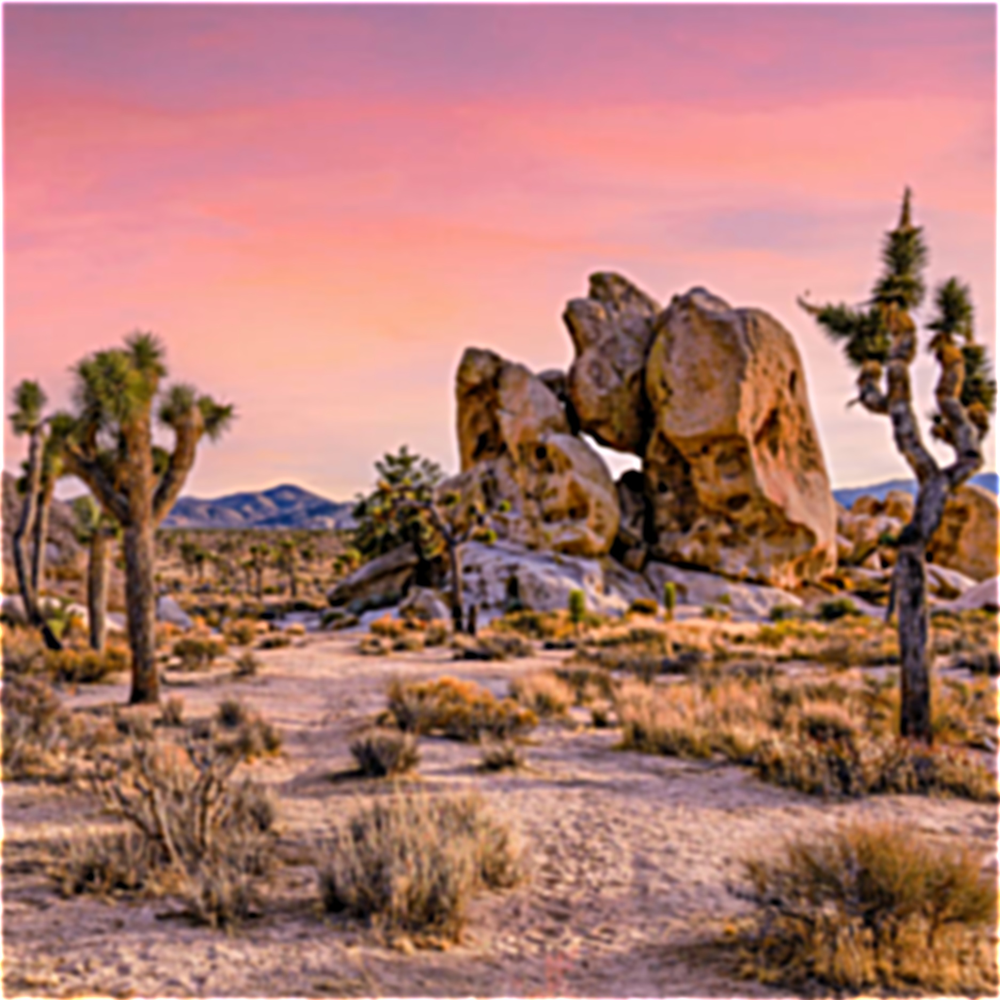
2.2 Hybrid Images
Things are getting harder and more interesting. Yay!
The phenomena is that high frequency (details of an image) is most salient when looking at an image up close. Yet, low frequency (structure of the image) is most salient far away. From this, we can create hybrid images which look different from close up / far away, playing with our minds and our perceptions!
The algorithm is as follows: get the low frequency part of image A, get the high frequency part of image B, and merge the 2 to make a hybrid image! Looking up close, you'll see more of image B, looking far away, you'll see more of image A. Pretty epic.
To simulate looking far away we make the image large. To simulate looking up close we make the image tiny.
Lincoln vs Roosevelt
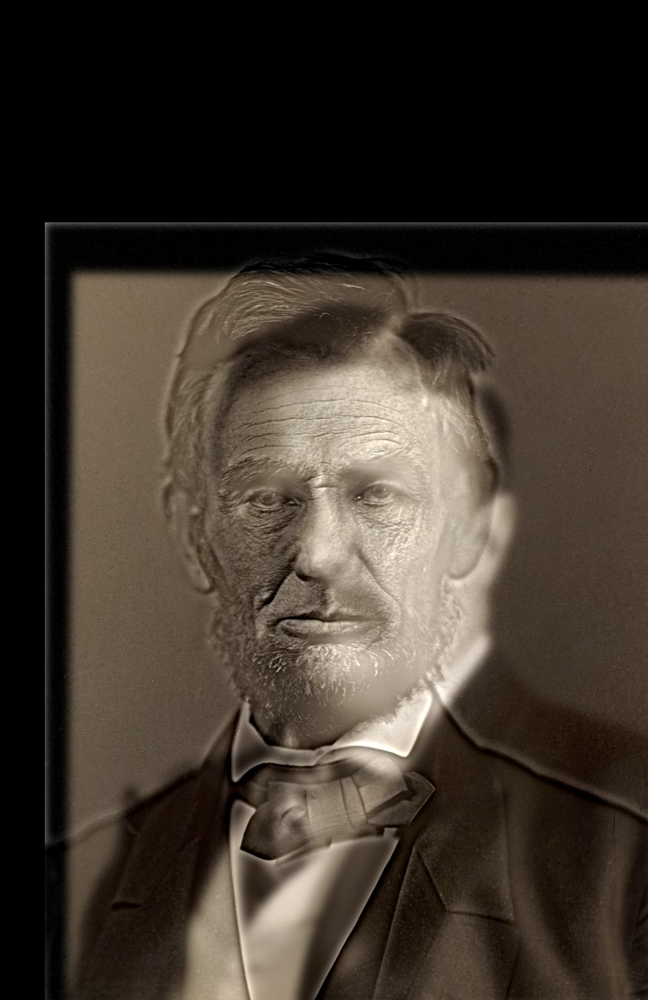
I learned that the most crucial part of this was not the algorithm itself, but fine tuning the sigma for the low pass filter (gaussian sigma), the sigma for the high pass filter (laplacian sigma), and choosing the right images / alignment.
Alaska vs city
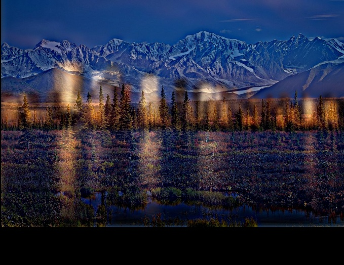
Panda vs Red Panda
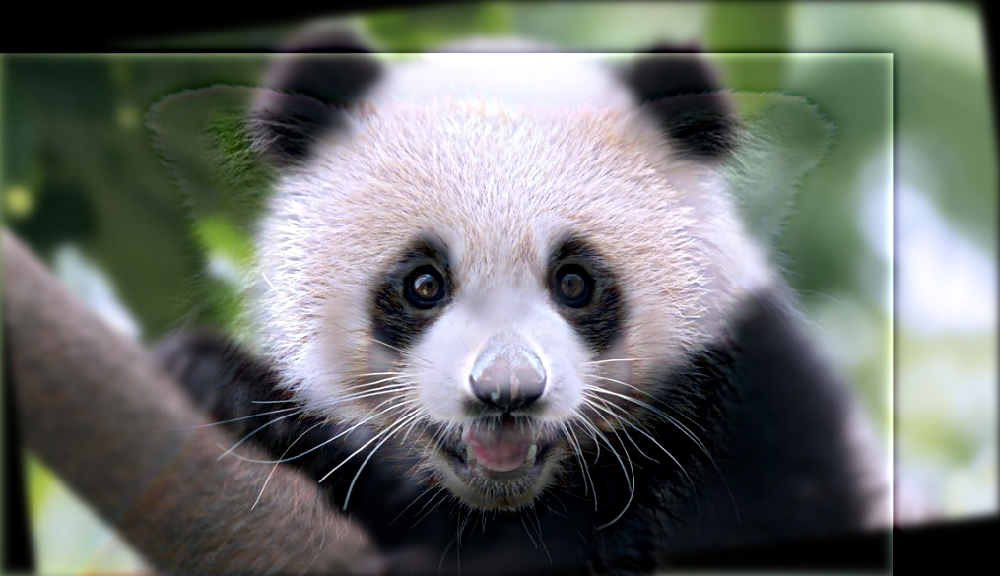
This is definitely my favorite one. Is this a forest, or a city? Look closely.
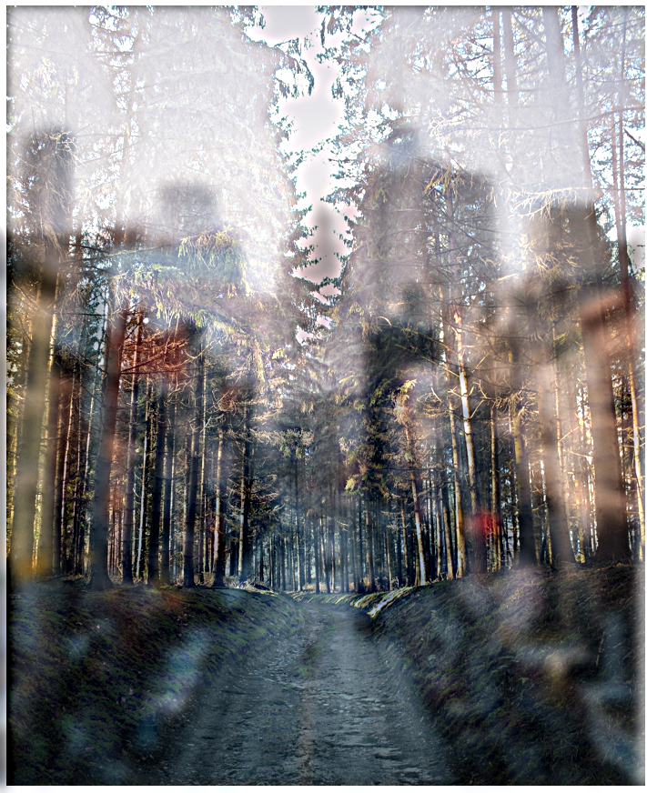
Time for some frequency analysis and math.
Below are FFT plots of the frequencies in the images.
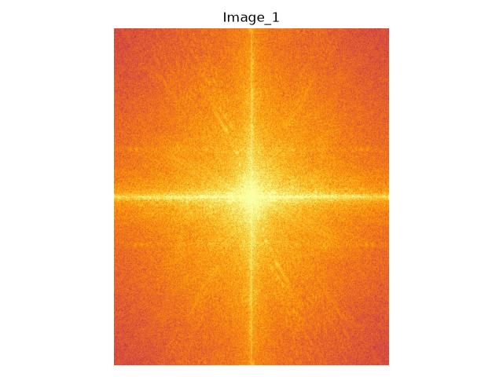
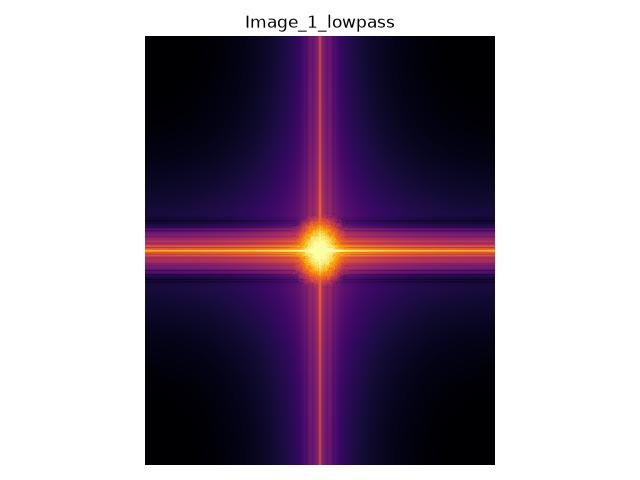
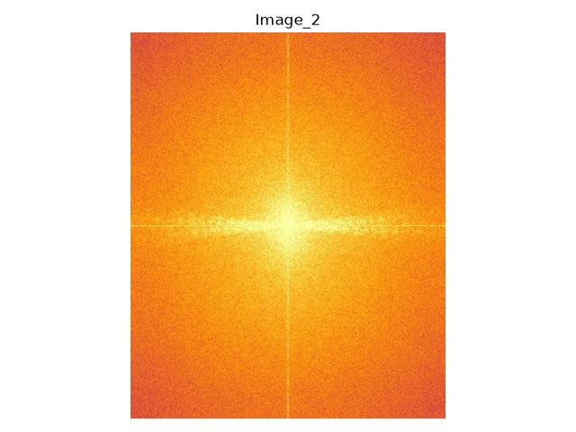
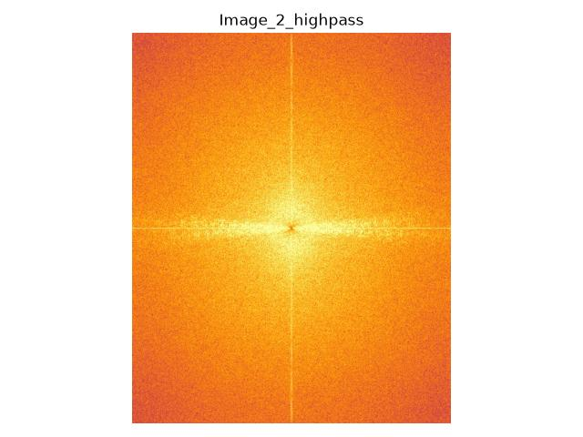
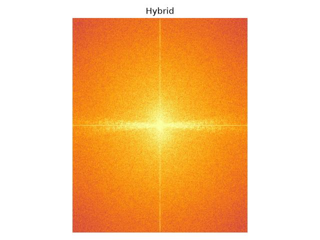
The low pass filter successfully keeps low frequency signals in the image, as can be seen by the concentrated cluster of light in the center. The high pass filter is not as obvious, but if you squint you can see a red dot in the middle, showing low frequencies were cut out.
Here below are many failed trials I had. Art requires experimentation!
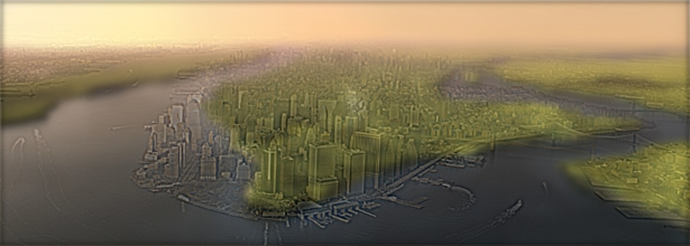
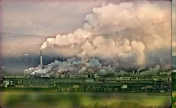
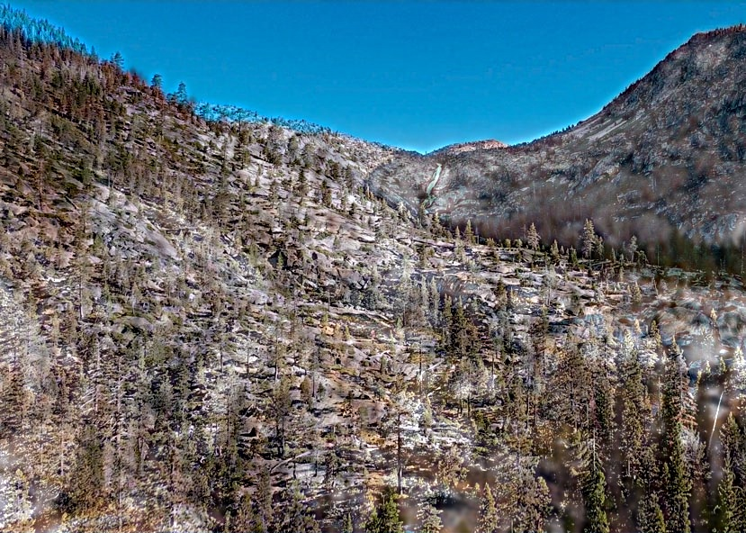
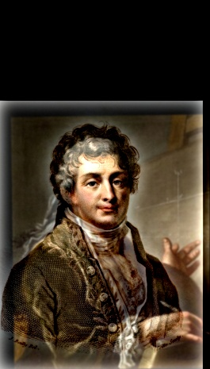
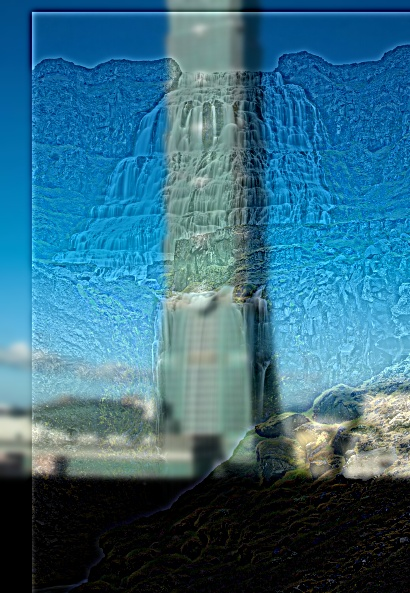
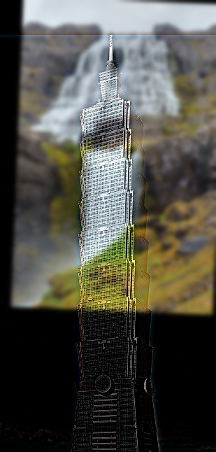
2.3: Gaussian and Laplacian Stacks
I'm really excited for this one. I saw the Oraple during course lecture and I instantly knew I wanted to recreate it for funzies. Without GenAI, how can we blend 2 distinct images together!?
Problem: If we blend 2 images too slowly, than the images will visibly overlap and "ghost" each other. If we blend too quickly, they will create a very visible seam.
Digging a little deeper, we find that the window size for blending depends on the feature size. Small features in the image need a small window size to blend quickly without ghosting. Large features in the image need a large window size to blend slowly without seams.
From the beauty of frequencies and filters, we know that small features correlate to low frequencies... and large features correlate to high frequencies! So, if we blend each pass of frequencies separately with different window sizes, then combine them, it should work!
Oraple example
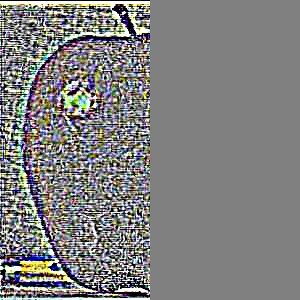
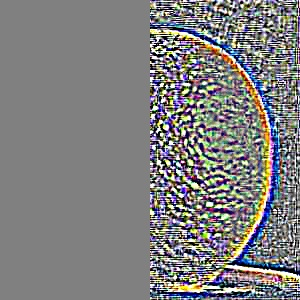
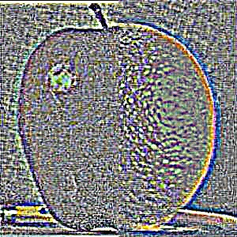
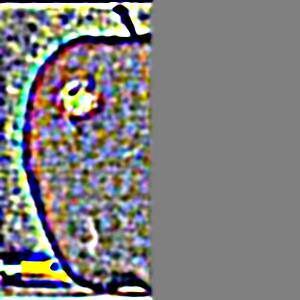
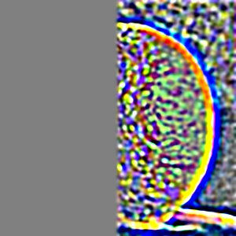
TODO prose
Window sizes
Multiresolution Blending
TODO prose
TODO prose
Utah + Milky Way — soft sweep across the sky
Lake + Lava — lasso down the runoff channel
Forest + Fire — vertical wipe across the slope
Reflection 1 + Reflection 3 — straight band at the waterline
Seasons — vertical split through the meadow
TODO prose
Campanile + coastline — where it does not hold up
Glacier + Volcano — the same rim, a second pair